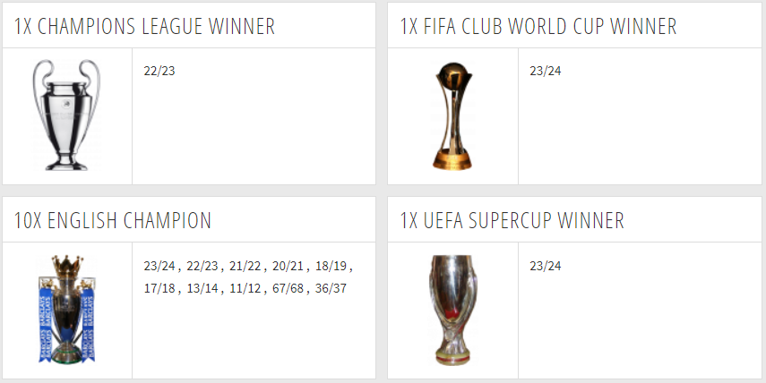
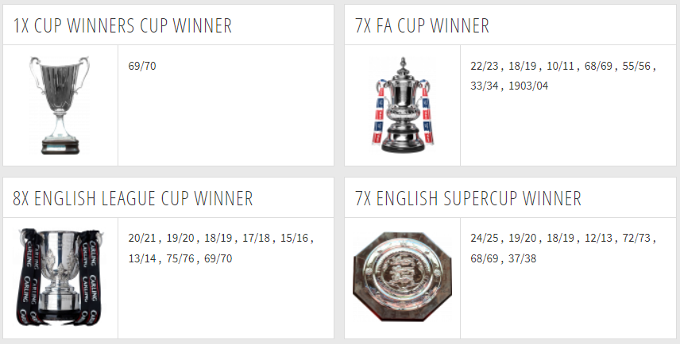
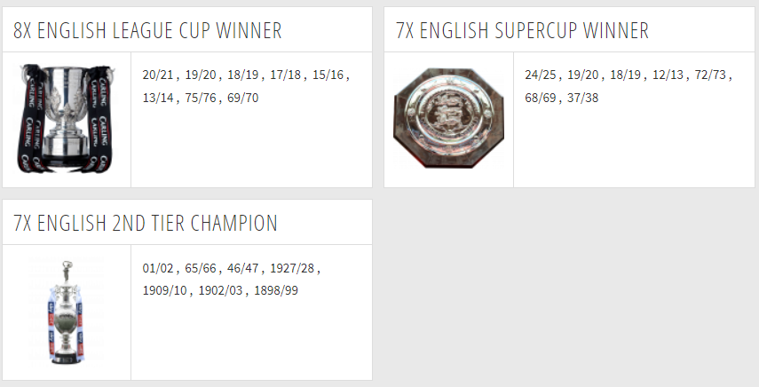

Manchester City
Manchester City Football Club is a professional football club based in Manchester, England. Founded in 1880 as St. Mark's (West Gorton), it became Manchester City in 1894. The club plays in the Premier League, the top tier of English football, and its home ground is the Etihad Stadium, which has a capacity of over 53,000. In recent years, under the management of Pep Guardiola, Manchester City has established itself as one of the most dominant teams in world football, known for their attacking style, tactical versatility, and possession-based play. The club is owned by the City Football Group, which has significantly invested in the team’s infrastructure and player recruitment, elevating Manchester City to global prominence.
TROPHIES
Manchester City Football Club has amassed an impressive total of 76 major trophies and achievements throughout its history. This includes multiple Premier League titles, FA Cups, League Cups, European honors like the UEFA Champions League, and international victories such as the FIFA Club World Cup. Their dominance spans both domestic and international competitions, marking them as one of the most successful clubs in football.
  Source: TransferMarkt.com
Latest News
Man City's Case
The future of Manchester City hangs in the balance as the club grapples with serious allegations of financial wrongdoing. The 115 charges brought by the Premier League could have far-reaching consequences for the club, its fans, and the Premier League as a whole. Outcomes could include point deductions, financial penalties, or even expulsion from the competition. The case is being closely watched by football fans around the world.
Transfer Rumour
Manchester City is actively linked with multiple transfer rumors as the January 2024 window approaches. The club is reportedly exploring midfield options to address their depth concerns, with potential targets including Martín Zubimendi from Real Sociedad, Torino’s Samuele Ricci, Atalanta’s Ederson, and Nicolo Barella from Inter Milan. These players are seen as potential reinforcements, especially in midfield, where City may seek to strengthen during the next transfer window.